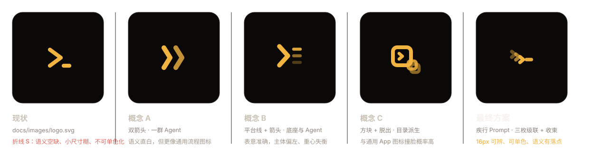
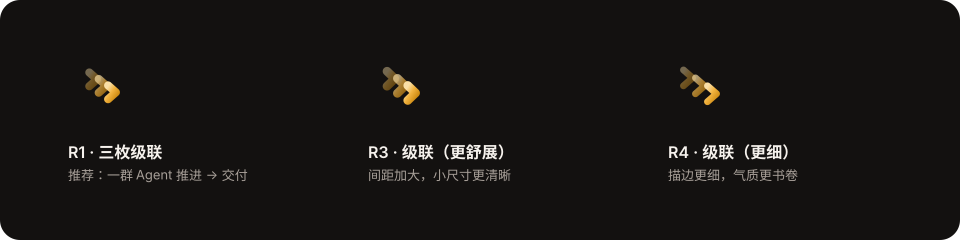
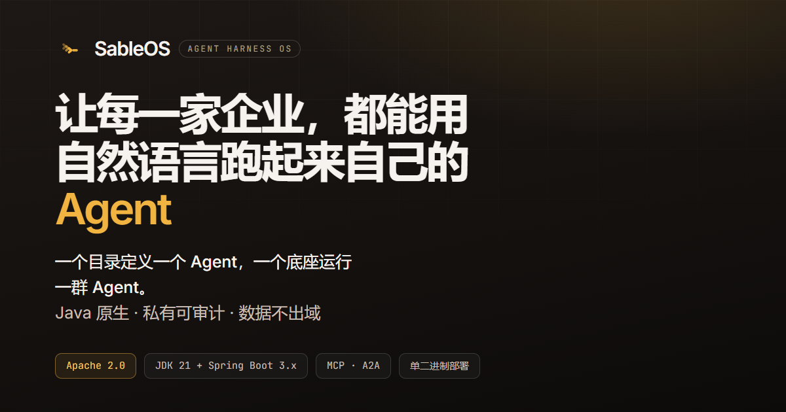

GitHub Pages 展示方案 · 设计稿
围绕 SableOS「Java 原生、私有可审计的 Agent OS」这一定位，给出完整的设计系统、页面结构、标识体系与 README 用法。全部产出为设计稿与静态原型，不含业务开发，可直接用于评审与后续实施。
两个文件，直接双击用浏览器打开。页面支持明暗切换、锚点导航、代码复制与滚动进场。
design/site/index.html
11 个内容区块：Hero、为什么、定位、核心能力、特性、架构、快速开始、设计原则、路线图、生态、文档、CTA。含明暗双主题与响应式布局。
页面没有隐瞒项目还只有骨架这一事实，而是把它做成一条设计过的一等状态：Hero 用燃金徽标点出「文档先行 · 预览稿」，
快速开始段落用提示条说明命令以《技术方案》为准、骨架阶段即可验证 mvn clean package。
这样做的好处是——项目每推进一步，只需要改文案和状态字段，版式与气质不受影响。
按「读者决策路径」排序：先给身份与一句话价值，再回答为什么、是什么、怎么用、能不能信。
| # | 区块 | 回答读者的问题 | 主要组件 |
|---|---|---|---|
| 01 | Hero | 这是什么？凭什么信？ | 徽标组 + 大标题 + 北极星公式标签 + 终端演示 + 4 个指标 |
| 02 | 为什么需要 | 它解决我什么痛点？ | 4 张痛点→解法对照卡（门槛 01–04） |
| 03 | 生态定位 | 和框架、编排平台什么关系？ | 三层对比卡 + 「为什么必须是 Java」提示条 |
| 04 | 核心能力 | 能力边界在哪？ | 5 张能力卡 + 1 张演进主线卡 |
| 05 | 核心特性 | 有哪些卖点？ | 9 条主张卡（对应 README 九条特性） |
| 06 | 架构 | 技术上是认真的吗？ | 四层链路条 + 14 模块表（含落地状态） |
| 07 | 快速开始 | 我要多久能跑起来？ | 4 步流程 + 命令行卡 + AGENT.md / 目录结构 Tabs + 三种运行模式表 |
| 08 | 设计原则 | 它的取舍是否可信？ | 7 条原则双列列表 |
| 09 | 路线图 | 会走到哪一步？ | 三阶段卡（当前 / 规划 / 愿景）+ 横向能力条 |
| 10 | 生态与标准 | 是否跟主流一起玩？ | MCP / Skills / Spring AI / A2A 卡片网格 |
| 11 | 文档 + CTA + 页脚 | 下一步去哪？ | 6 份文档入口卡 + 深色 CTA + 四栏页脚 |
仓库现有 docs/images/logo.svg 是一枚折线构成的「S」，
它能读出字形，但读不出行业语义——放在任何 SaaS、任何开发者工具上都不违和，也就等于没有记忆点。
下面是评估结论与重新设计方案。
#332C27 暖灰底与 #F2B441 燃金是很好的资产，应保留并系统化结论：重新设计，但继承其暖墨底 + 燃金的配色基因。
参数化生成：design/assets/make-logo.py，改参数即可整体重算全套资产。
三个备选概念都做出来了再比较。语义直白的方案（A / C）代价是撞脸，B 表意准确但重心失衡。

选定方向后，再比三组描边宽度与间距参数，取小尺寸表现最均衡的一组。

深色底、浅色底、单色三种环境各有一套，尺寸从 16px 覆盖到 512px。
logo.svg
主标识 · 深色底应用图标
512 × 512
logo-mark-mono.svg
单色版 · 继承 currentColor
64 × 64
favicon.svg
favicon · 两枚箭头加粗简化
64 × 64 · 16px 可辨
logo-horizontal-light.svg
横向组合 · 浅底
640 × 160

我试过三套语义更直白的方案：双箭头（一群 Agent）、平台线 + 箭头（底座与 Agent）、方块 + 脱出小方块（目录派生）。
直白方案的代价是「看起来像通用 SaaS 图标」——方块脱出尤其容易和其他产品撞脸。
最终选 chevron 级联，是因为它在 16px 下依然成立、天然可单色化，而且 > 这个形状对目标读者（Java 后端工程师）
有本能的 Prompt 联想，语义靠透明度阶梯和收束横补足，而不是靠把含义画全。
所有颜色、字号、间距、圆角都收在 tokens.css 一处。改这一层就能整体换肤，组件样式一律引用变量。
配色取了名字而不是用 gray-500——「黑貂墨」是项目名 sable 的本意，也是刻意的暖调处理。
不用纯黑也不用冷灰。纯黑显得廉价、冷灰显得像默认主题；暖墨色系（色相约 30°）让画面有纸张与皮革的质感，也更耐看。
sable-950
#0B0908
sable-900
#131110
sable-850
#1A1614
sable-800
#221D1A
sable-700
#2E2823
sable-500
#5A5049
sable-050
#F4EFE8
继承仓库现有 logo 的 #F2B441 作为 400 中间调，向两端展开成完整色阶。
深色底用 400（10.2:1），浅色底用 700（5.9:1）——同一品牌色在不同主题下各自取到合规的那一档。
ember-050
#FDF8EC
ember-200
#F7D68C
ember-300
#F6C868
ember-400
#F2B441
ember-600
#B87A14
ember-700
#8A5A0B
ember-800
#5E3C06
| 类别 | 取值 | 用法与理由 |
|---|---|---|
| 正文字号 | 16px / 1.65 | 不跟随系统缩放做小字号，技术读者长时间阅读更省力 |
| 流式大标题 | clamp(2.35rem → 4.15rem) | 移动端不撑破版心，宽屏拿到足够气势，无断点跳变 |
| 字重 | 400 / 500 / 600 | 只用三档；中文在 600 以上容易糊，粗体上限压到 600 |
| 间距基数 | 4px（--sp-1 → --sp-32） | 统一节奏，避免出现 13px、18px 这类随手值 |
| 区块纵向节奏 | clamp(4rem → 8rem) | 长页面靠大留白分节，不靠分割线和色块 |
| 圆角 | 6 / 8 / 12 / 16 / 24 / 32 | 小控件 8、卡片 16、大容器 32，形成一致的圆角家族 |
| 版心宽度 | 1160px（正文 68ch） | 宽屏信息密度与可读性的平衡点 |
| 动效时长 | 140 / 240 / 520ms | 统一缓动 cubic-bezier(.22,1,.36,1)，全部可被 reduced-motion 关闭 |
Hero 与 CTA 用深色渐变做背景，而渐变背景色 computedStyle 读不到，常规对比度检测会误判成白底。
我的做法是先算出渐变「最亮点」——渐变顶端 #1D1815，叠加燃金光晕（13% 不透明）与网格线（2.8% 白）
后合成约 #3F3221，再按这个最不利采样值验证所有前景色：主标题 11.15:1、正文 6.86:1、标语 7.92:1、统计标签 4.83:1，全部达标。
换渐变参数时必须重跑这一步。
22 个组件（含变体）按块组织，前缀统一 sd-。新增板块时优先复用，避免样式发散。
| 组件 | 类名 | 状态 / 变体 | 用途 |
|---|---|---|---|
| 按钮 | .sd-btn | primary / ghost / onDark / sm | 全站操作入口 |
| 徽标 | .sd-badge | 默认 / accent / 带状态点 | 项目状态、许可协议 |
| 标签 | .sd-tag | 深底专用 | 北极星公式的七个构成项 |
| 卡片 | .sd-card | hover / accent / 带图标 / 带编号 | 能力、特性、对比 |
| 痛点对照卡 | .sd-pain | bad → good 双行 | 「为什么需要」四道门槛 |
| 提示条 | .sd-note | 带图标 | 阶段性说明、设计取舍 |
| 代码块 | .sd-code | 带语言标签 + 复制按钮 | 命令、AGENT.md、目录树 |
| 表格 | .sd-table | 可横向滚动 / 带 caption | 模块表、命令表 |
| 步骤条 | .sd-step | 自动编号 + 连接线 | 快速开始四步 |
| Tabs | .sd-tabs | 键盘可操作 / 无 JS 时全部展开 | AGENT.md 与目录结构切换 |
| 分层条 | .sd-layer | L1–L4 + 能力 chip | 四层处理链路 |
| chip | .sd-chip | 等宽字体 | 层内能力标签 |
| 原则条目 | .sd-principle | 01–07 编号 | 设计原则双列 |
| 路线图卡 | .sd-road__phase | now / next / vision 三态 | 三阶段规划 |
| 生态卡 | .sd-eco__item | 可点击 / 静态 | MCP、A2A 等 |
| 文档行 | .sd-doc | hover 箭头位移 | 六份文档入口 |
| 终端演示 | .sd-term | 含光标闪烁动画 | Hero 主视觉 |
| 指标 | .sd-stat | 数值 + 单位 + 标签 | Hero 四个关键数字 |
| CTA 区块 | .sd-cta | 深底渐变 | 结尾共建引导 |
| 页脚 | .sd-foot | 四栏 + 底栏 | 全站导航与元信息 |
| 主题切换 | .sd-iconbtn | 太阳 / 月亮图标互换 | 明暗切换，记忆到 localStorage |
| 跳转链接 | .sd-skip | 仅键盘聚焦时出现 | 无障碍「跳到主要内容」 |
21 个图标以内联 SVG sprite 提供，无图标库依赖，可用 currentColor 随主题变色。
全部 21 个均已定义且被引用，无悬空引用。
terminal · cpu · box · shield · brain · plug · layers · db · globe · sliders · map · file · users · copy · check · arrow · external · sun · moon · info · github
四个环节的产出物都落在一个独立的 design/ 目录里，不与现有代码、文档混放，评审通过后可整体迁移到 website/。
design/
├── README.md # 设计方案说明（本次交付总览）
├── site/ # 展示页面
│ ├── index.html # 首页（11 个区块）
│ └── assets/
│ ├── css/
│ │ ├── tokens.css # 设计变量（换肤只改这里）
│ │ └── main.css # 组件与布局（19 节）
│ ├── js/site.js # 渐进增强脚本（8 个模块）
│ └── img/
│ ├── favicon.svg
│ ├── apple-touch-icon.png
│ ├── logo.svg / logo-mark-mono.svg
│ └── og-cover.png # 1200×630 分享封面
├── assets/ # 标识资产
│ ├── make-logo.py # 参数化生成器
│ ├── logo.svg # 主标识 512
│ ├── logo-mark.svg # 无底版
│ ├── logo-mark-mono.svg # 单色版
│ ├── favicon.svg # 小尺寸简化版
│ ├── logo-horizontal-dark.svg # 横向组合 · 深底
│ ├── logo-horizontal-light.svg # 横向组合 · 浅底
│ ├── og-cover.html # 分享封面源文件
│ ├── _compare-marks.svg # 参数对比图
│ └── logo-concepts/ # 备选概念（留档）
└── preview/ # 评审与校验
├── index.html # 评审台（你正在看的这一页）
├── audit.json # 自动校验原始结果
└── *.png # 按需生成的分区截图（已 gitignore）
tokens.css + main.css，22 组件、21 图标site/index.html，11 区块、明暗双主题、响应式audit.json + 逐项结论（第 07 节）index.html 就能看，无需 npm / 构建链
设计稿不是「看起来差不多」就交付。audit.json 是用真实浏览器（Chromium 无头）跑出来的结果，
覆盖控制台报错、资源加载、死链、对比度、横向溢出与几何一致性。
对比度用例（明 + 暗 × 36 项）
不达标项
死链 / 悬空图标引用
断点无横向溢出（1440 / 768 / 390）
| 检查项 | 方式 | 结果 |
|---|---|---|
| 控制台与资源 | 监听 console.error / pageerror / requestfailed | 无代码错误 |
| 图标引用完整性 | 比对 21 个 symbol 定义与 31 处 use 引用 | 无悬空 |
| 死链 | 解析全部 37 个 <a>，检查 href 是否为 # | 0 个 |
| 站外链接安全 | 统一补 rel="noopener noreferrer" + target | 17 个已处理 |
| 对比度（浅色主题） | WCAG AA，正文 4.5:1 / 大字 3.0:1，渐变按最亮点取样 | 36 项全通过 |
| 对比度（深色主题） | 同上 | 36 项全通过 |
| 横向溢出 | 遍历全部元素，排除滚动容器；1440 / 768 / 390px 三档 | scrollWidth = viewport |
| 未使用样式 | CSS 声明类 vs DOM 实际使用类 | 0 个冗余 |
| 字体加载失败降级 | 拦截 Google Fonts 后比对几何 | 零布局位移 |
| 无障碍 | 跳转链接、focus-visible、aria-label、tab 键盘操作、reduced-motion | 已覆盖 |
| 渐进增强 | 禁用 JS 后页面完整度 | 文案与结构完整可读 |
这里刻意不放截图。截图是二进制、会随改版过期、又会把仓库撑大；改用同源 iframe 内嵌真实页面，
永远是最新的，且不占任何仓库体积。下面的分区预览通过 ?theme= 把明暗主题固定下来，
点击任一张即可打开完整页面。
需要贴到 Issue / PR / 文档里的静态图时再生成。这些 PNG 已加入 .gitignore，
不进版本库，避免每次改版都新增二进制历史。
| 想看的 | 生成后文件名 |
|---|---|
| 首屏 · 浅色 / 深色 | hero-light.png · hero-dark.png |
| 整页 · 浅色 / 深色 | home-light.png · home-dark.png |
| 响应式 · 768 / 390 | home-768.png · home-390.png |
| 各分区 · 明暗各一份 | sec-{why,core,architecture,quickstart,roadmap,docs}-{light,dark}.png |
生成方式与校验脚本见仓库外的 design/README.md「质量校验」一节；
校验原始数据已入库：preview/audit.json。
三个位置固定使用：页首标识、状态徽标、真金白银的骨架验证命令。以下片段可直接复制替换现有开头。
替换仓库现有 README 第 1–5 行的 <p align="center"> 图片块。要点是 width 与
alt 都要写，且 alt 描述实质内容而非「logo」。
<!-- markdownlint-disable MD033 MD041 --> <p align="center"> <img src="docs/images/logo.svg" alt="SableOS：Java 原生的私有 Agent OS" width="128"> </p> <h1 align="center">SableOS</h1> <p align="center"> <strong>一个目录定义一个 Agent，一个底座运行一群 Agent。</strong><br> 企业能完全掌控的、Java 原生的、私有可审计的 Agent OS。 </p> <!-- markdownlint-enable MD033 MD041 -->
沿用现有 shields.io 方案（无外部服务依赖、可离线渲染）。 建议把「状态」放在第一位——读者最想知道的就是这个项目现在能不能用。
<p align="center"> <a href="docs/TechnicalSolution.md"><img src="https://img.shields.io/badge/%E7%8A%B6%E6%80%81-%E6%96%87%E6%A1%A3%E5%85%88%E8%A1%8C-yellow.svg" alt="项目状态：文档先行"></a> <img src="https://img.shields.io/badge/JDK-21%2B-orange.svg" alt="JDK 21+"> <img src="https://img.shields.io/badge/Spring%20Boot-3.x-6DB33F.svg" alt="Spring Boot 3.x"> <img src="https://img.shields.io/badge/License-Apache%202.0-blue.svg" alt="Apache License 2.0"> <img src="https://img.shields.io/badge/%E7%94%9F%E6%80%81-MCP%20%7C%20A2A-8957E5.svg" alt="对接 MCP 与 A2A"> </p>
架构等关键章节前，用横向组合标识作为分节视觉锚点，让长 README 有喘息。
<!-- 架构章节开头 -->
<p align="center">
<img src="docs/images/logo-horizontal-dark.svg" alt="SableOS" width="360">
</p>
现有 README 引用的是 docs/images/logo.svg，而 docs/sableos.md 与
《技术方案》共 12 处引用的是 ../website/public/images/*.svg——仓库里没有 website/ 目录，这些是悬空引用。
建议随本次落地一并处理：在仓库根建 website/，把 design/site/ 迁进去，
再把 12 处引用统一指向 website/public/images/ 下的实际文件。这也是 CLAUDE.md 第 9 节登记的待办。
模块化结构是按「项目会持续长大」设计的。以下是明确的扩展点，每一项都不需要改动现有版式。
docs/ 文档站（Markdown 渲染）changelog/ 更新日志examples/ 示例索引blog/ 技术文章404.htmldata-i18n 属性位）| 扩展项 | 改动位置 | 是否需要改设计系统 |
|---|---|---|
| 加一个内容区块 | 复制一段 <section class="sd-sec"> + 复用现有卡片组件 | 否 |
| 加一个新组件 | 在 main.css 追加编号小节，复用 tokens.css 变量 | 否 |
| 换主色 / 换品牌色 | 只改 tokens.css 的 ember 与 sable 色阶 | 否 |
| 加第三方脚本 | site.js 追加编号模块，包在独立 IIFE 内 | 否 |
| 迁移到静态站点生成器 | 保留 assets/ 不动，把 index.html 拆成组件模板 | 否 |
| 新增标识变体 | 在 make-logo.py 加一个生成函数，参数与主标识共用 | 否 |
sable-labs/sableos 是否正确（现集中在 site.js 顶部一处配置）design/ 还是直接建 website/| 步骤 | 动作 | 产出 |
|---|---|---|
| 1 | 拍板标识与配色 | 冻结 tokens.css 色阶与 logo 参数 |
| 2 | 建 website/ 并迁入 | GitHub Pages 可访问的站点目录 |
| 3 | 修掉 12 处悬空图片引用 | 《技术方案》与 sableos.md 的配图补齐 |
| 4 | 更新 README 开头 | 标识块 + 徽标行 + 状态说明 |
| 5 | 开 Pages + Actions（可选） | 推送即发布 |
| 6 | 随项目推进补内容 | 更新日志、示例集、对比表 |
设计上没有把 SableOS 包装成「又一个 Agent 框架」，而是紧扣它真正的主张—— 守住运行时这一层、一群 Agent 而非一个、企业可控可审计，用暖墨 + 燃金建立质感， 用一套变量化的设计系统保证它经得起长期迭代。所有校验项已通过，等你确认方向后再进入开发。